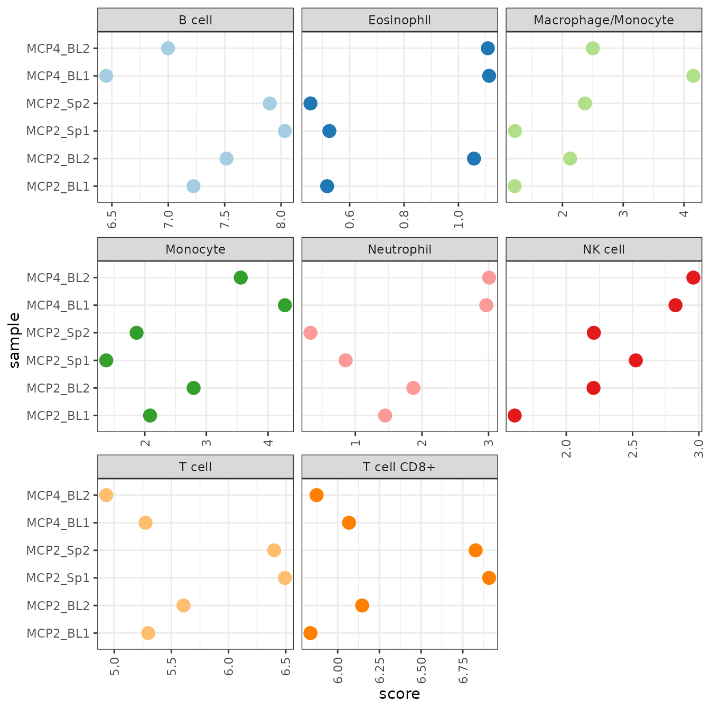
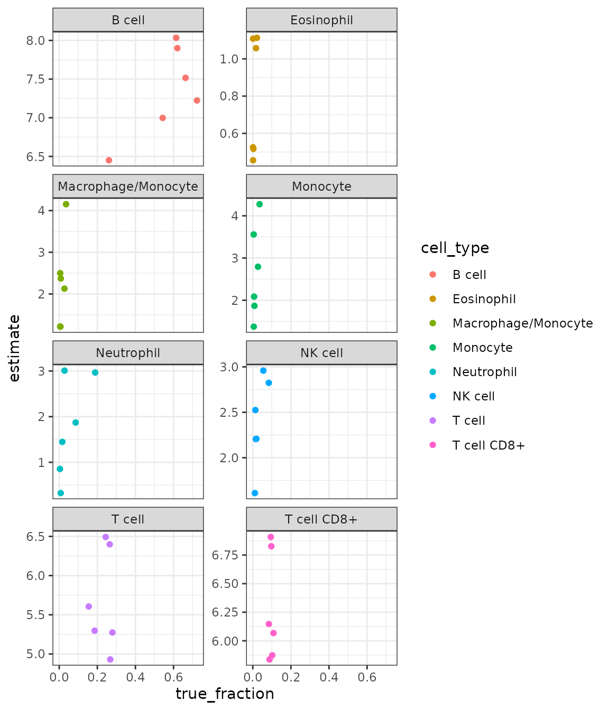

vignettes/detailed_example_mouse.Rmd
detailed_example_mouse.RmdAs previously done for the human deconvolution methods, Immunedeconv includes an example dataset with samples from mouse blood and spleen from (Petitprez et al. 2020). It is available from immunedeconv::dataset_petitprez. It contains a gene expression matrix (dataset_petitprez$expr_mat) generated using bulk RNA-seq and ‘gold standard’ estimates of immune cell contents profiled with FACS (dataset_petitprez$ref). We are going to use the bulk RNA-seq data to run the deconvolution methods and will compare the results to the FACS data later on.
# show the first 5 lines of the gene expression matrix
knitr::kable(dataset_petitprez$expr_mat[1:5, ])| MCP2_BL1 | MCP2_BL2 | MCP2_Sp1 | MCP2_Sp2 | MCP4_BL1 | MCP4_BL2 | |
|---|---|---|---|---|---|---|
| Rn18s | 10126.783 | 20242.132 | 5804.110 | 7848.710 | 16926.178 | 14015.107 |
| mt-Co1 | 7412.649 | 7498.994 | 21293.790 | 18879.589 | 6666.412 | 7417.677 |
| Eef1a1 | 4309.191 | 4917.897 | 9011.338 | 9093.948 | 4353.079 | 3924.303 |
| Gm10925 | 3646.178 | 3456.046 | 13329.570 | 11212.637 | 4333.629 | 5104.390 |
| Tpt1 | 4762.629 | 4677.535 | 8284.424 | 7918.483 | 4471.157 | 4006.737 |
To estimate immune cell fractions, we simply have to invoke the deconvolute_mouse function. It requires the specification of one of the following methods for deconvolution:
deconvolution_methods_mouse## mMCPcounter seqImmuCC DCQ BASE
## "mmcp_counter" "seqimmucc" "dcq" "base"For this example, we use mMCPcounter. As a result, we obtain a cell_type x sample data frame with cell-type scores for each sample.
res_mMCPcounter <- deconvolute_mouse(dataset_petitprez$expr_mat, "mmcp_counter")Similarly to its human counterpart, mMCP-counter provides scores in arbitrary units that are only comparable between samples, but not between cell-types.
res_mMCPcounter <- res_mMCPcounter[res_mMCPcounter$cell_type %in% colnames(dataset_petitprez$ref), ]
res_mMCPcounter %>%
gather(sample, score, -cell_type) %>%
ggplot(aes(x = sample, y = score, color = cell_type)) +
geom_point(size = 4) +
facet_wrap(~cell_type, scales = "free_x", ncol = 3) +
scale_color_brewer(palette = "Paired", guide = FALSE) +
coord_flip() +
theme_bw() +
theme(axis.text.x = element_text(angle = 90, vjust = 0.5, hjust = 1))## Warning: It is deprecated to specify `guide = FALSE` to remove a guide. Please
## use `guide = "none"` instead.
Human-based methods can still be used to deconvolve mouse data through the use of orthologous genes. The function mouse_genes_to_human does that by retrieving the correspondent gene names with biomaRt. Since the gene names are retrieved from the Ensembl database, it can happen that the command has to be run with different Emsembl mirrors (see the documentation)
dataset_petitprez_humanGenes <- mouse_genes_to_human(dataset_petitprez$expr_mat, mirror = 'uswest')
res_MCPcounter <- deconvolute(dataset_petitprez_humanGenes, 'mcp_counter')Let’s now compare the results with ‘gold standard’ FACS data obtained for the four samples. This is, of course, not a representative benchmark, but it gives a notion about what magnitude of predictive accuracy we can expect.
# construct a single dataframe containing all data
#
# re-map the cell-types to common names.
# only include the cell-types that are measured using FACS
cell_types <- c("B cell", "T cell CD8+", "T cell", "NK cell", "Monocyte")
tmp_res <- res_mMCPcounter %>%
gather("sample", "estimate", -cell_type)
reference_facs <- dataset_petitprez$ref %>%
gather("cell_type", "true_fraction", -"Sample Name") %>%
set_colnames(., c("sample", "cell_type", "true_fraction"))
result <- tmp_res %>%
inner_join(reference_facs)Plot the true vs. estimated values:
result %>%
ggplot(aes(x = true_fraction, y = estimate)) +
geom_point(aes(color = cell_type)) +
facet_wrap(. ~ cell_type, scales = "free_y", ncol = 2) +
theme_bw()